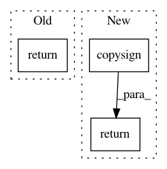

d1616c9e40755f9fe9c719d1d443dbf6ada5af4b,python/mxnet/ndarray/numpy/_op.py,,copysign,#Any#Any#Any#,5009
Before Change
>>> np.copysign(a, np.arange(3)-1)
array([-1., 0., 1.])
return _ufunc_helper(x1, x2, _npi.copysign, _np.copysign, _npi.copysign_scalar, _npi.rcopysign_scalar, out)
@set_module("mxnet.ndarray.numpy")
def ravel(x, order="C"):
After Change
array([-1., 0., 1.])
if isinstance(x1, numeric_types) and isinstance(x2, numeric_types):
return _np.copysign(x1, x2, out=out)
return _api_internal.copysign(x1, x2, out)
@set_module("mxnet.ndarray.numpy")
In pattern: SUPERPATTERN
Frequency: 3
Non-data size: 3
Instances
Project Name: apache/incubator-mxnet
Commit Name: d1616c9e40755f9fe9c719d1d443dbf6ada5af4b
Time: 2020-04-08
Author: 57363390+Yiyan66@users.noreply.github.com
File Name: python/mxnet/ndarray/numpy/_op.py
Class Name:
Method Name: copysign
Project Name: scipy/scipy
Commit Name: e0e7e55502fb6fa0142b2f173f8de6b73b254594
Time: 2017-03-27
Author: antonior92@gmail.com
File Name: scipy/optimize/_trustregion.py
Class Name: BaseQuadraticSubproblem
Method Name: get_boundaries_intersections
Project Name: chainer/chainer
Commit Name: d02772a31ca01d562d7d0e481e7ec2831decab4b
Time: 2019-10-11
Author: kataoka@preferred.jp
File Name: chainer/gradient_check.py
Class Name: _CheckBackward
Method Name: _sample_unit_vector